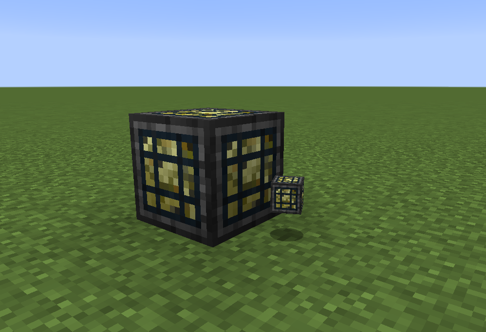

Daycare Block¶
The Daycare Block converts emeralds into EXP for nearby pokémobs. You must use a hopper, or similar to get the emeralds into the block, and you can also use a hopper to get un-used emeralds out of the block.
The options mentioned below are all located in the [machine] section of pokecube_adventures-common.toml.
when a pokémobs is near the the daycare block, the following will occur:
They will gain the amount of EXP specified by
dayCareExpFunctionTheir breeding cooldown will have
dayCareBreedAmountapplied to it, depending on the setting ofdayCareBreedSpeedupDepending on the amount of power needed by the above functions (specified via
dayCarePowerPerExp), emeralds will be consumed. The number of emeralds consumed depends on the value ofdayCarePowerPerFuel, and for applying the breeding cooldown to a lvl 100 pokemob, it will instead cost power as if the pokemob was the level specified indayCareLvl100EffectiveLevel.
These will happen every dayCareTickRate ticks, so lower values for that will result in faster action of the daycare block.